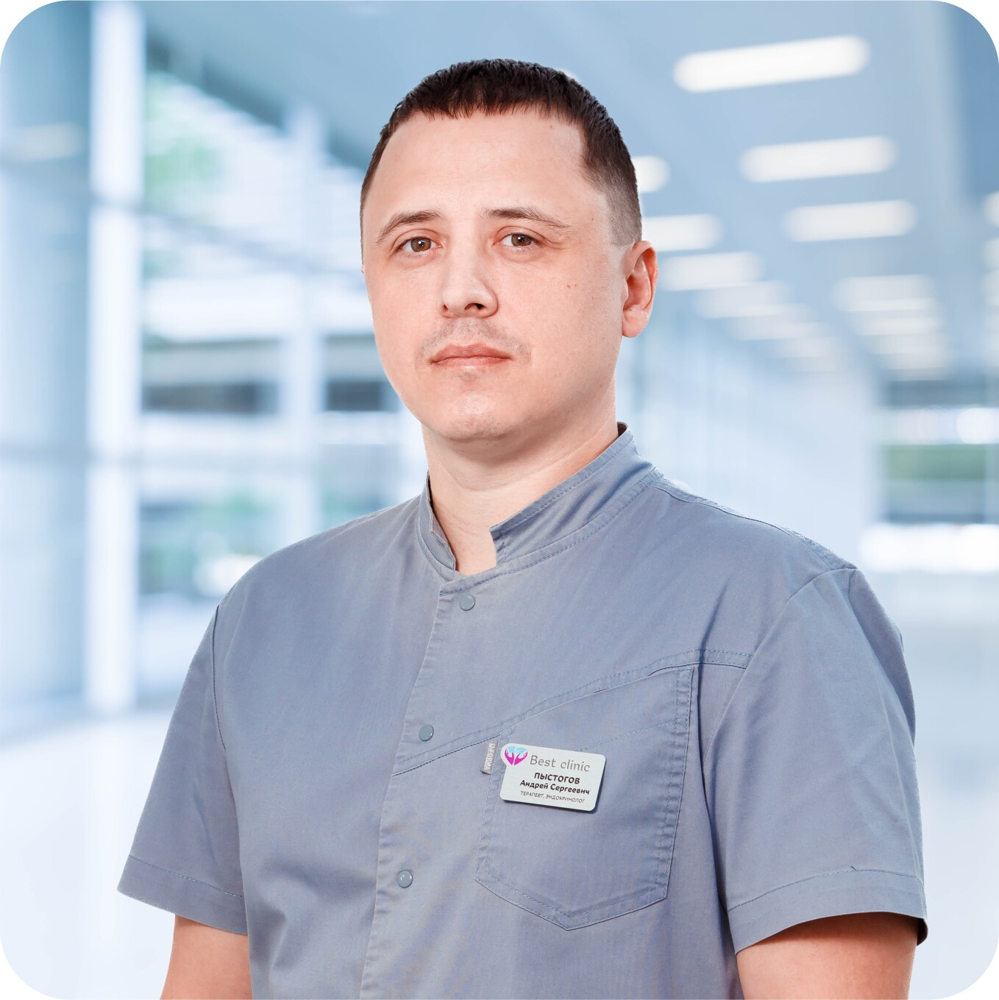

Диагностика и лечение заболеваний щитовидной железы, сахарного диабета, нарушений обмена веществ
Составление плана питания, коррекция веса, работа с дефицитами микроэлементов
Внедрение здоровых привычек, управление стрессом и энергией, профилактика возрастных изменений
Разбор лабораторных показателей с точки зрения доказательной медицины, рекомендации по дальнейшей диагностике
Оценка факторов риска, разработка стратегий сохранения здоровья сердца и сосудов
Независимая оценка ранее поставленных диагнозов и назначенного лечения
Ведение пациентов с хроническими заболеваниями, корректировка терапии в динамике
1. Запись. Нажимаете кнопку «Заявка на консультацию» — отправляете запрос на электронную почту. Или пишете напрямую в мессенджере Max. Там согласуем удобный день, время и порядок оплаты.
2. Оплата и подготовка. После оплаты заполняете анкету с описанием запроса и присылаете фото анализов, обследований и медицинских заключений (при необходимости).
3. Консультация. В назначенный день созваниваемся в удобном формате — аудио или видео (обычно используем «Телемост» от Яндекс). Длительность встречи 30–60 минут.